三大定位
Centennial Jing-Zhang AI Innovation Belt
京张开门线
一条遗产线，十二扇按时打开、有人值守、可以暂停和回退的公共门。AI 只给建议，最后一把钥匙永远在人手中。
OGP-12 + spatial decision deterministic audits: PASS
00 / Brief alignment
把任务书变成一张可核对的设计总纲
三大定位、五大功能、三区两翼与 OGP-12 不是四套平行口号，而是从战略到空间、从服务到门控的一条关系链。中关村科技服务翼供给能力，小月河场景赋能翼组织公众体验，三处重点区承接十二个可验证节点。
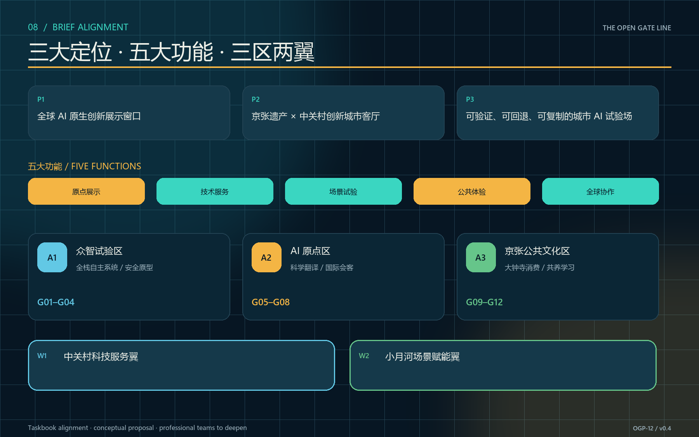
五大功能
三区两翼
公共门协议
总览地图三层范围重点区域用地分区交通慢行蓝绿公共空间建筑更新项目AI 场景核心指标任务覆盖自检状态来源假设
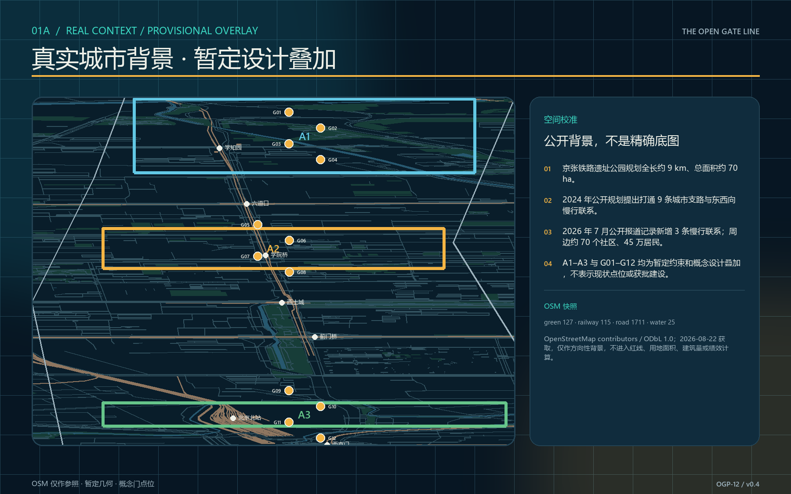
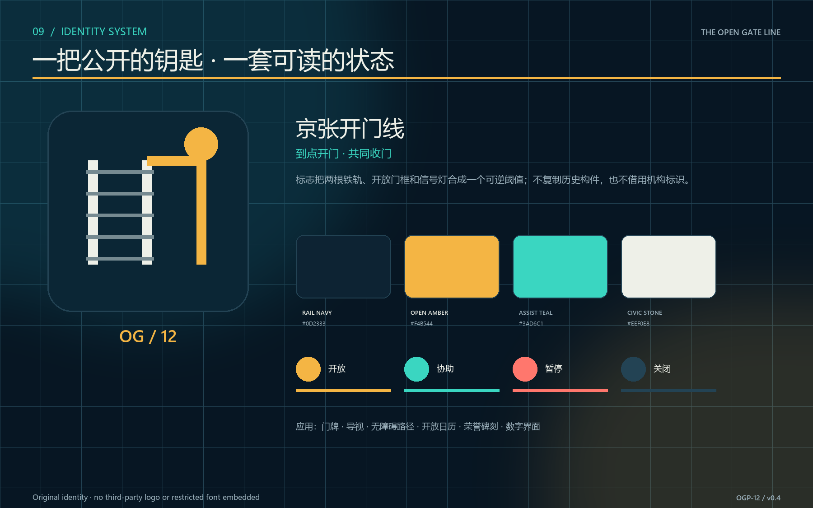
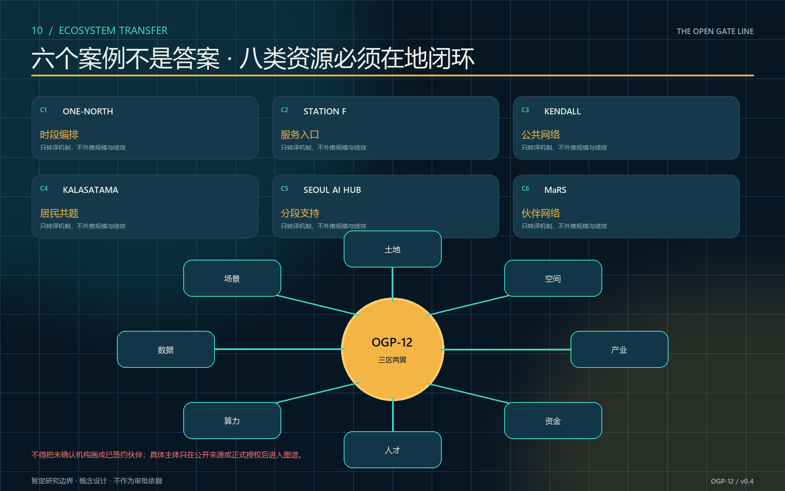
01 / Protocol
让城市空间成为算法的安全边界
OGP-12 不建全域人群画像，也不把公共空间交给自动准入。每扇门只处理一个被授权的公共任务，并把最小数据、人工权限、回退、启动、停止和退出资产绑定到具体空间。
11.41 km²暂定总体设计边界
12 / 12机器可读门卡
100%人工最终权限覆盖
100%无 AI 回退覆盖
关闭
观察
试开
开放
暂停
回退
只有责任人可推进“试开 / 开放”；任何安全、可达、公平、隐私或运营停止条件都可立即进入“暂停 / 回退”。
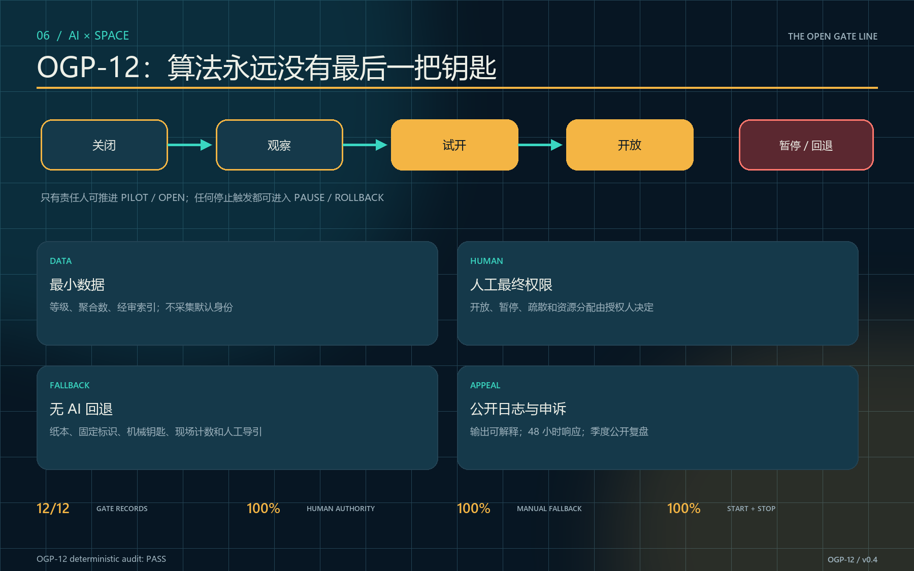
02 / Gate explorer
检查每一扇门，而不是相信一个总平台
选择门卡，核对空间组件、算法边界、人工责任和停止条件。键盘方向键可以在门卡之间移动。
03 / Spatial decision + field plan
先裁决三种空间方案，再安排可失败的现场验证
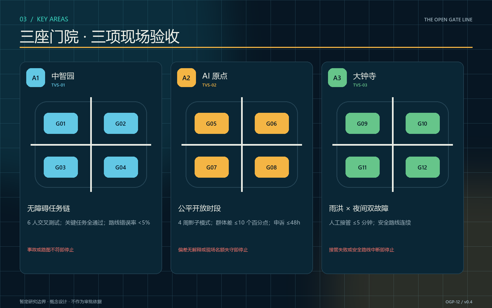
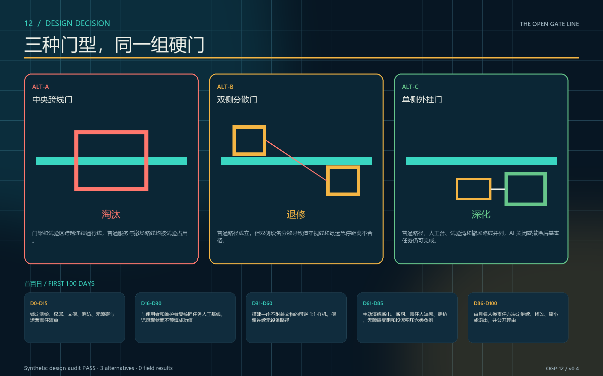
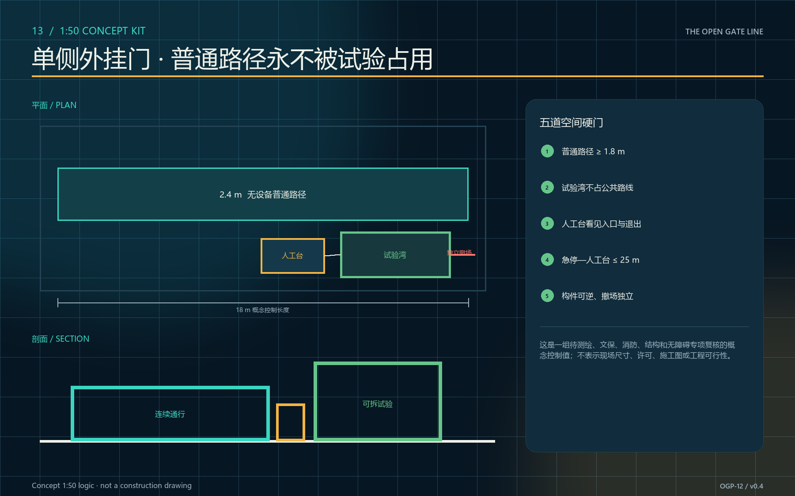
04 / Fail-safe experience
一座门在白天、夜间、降雨、活动和故障中都要可用
切换状态，检查空间如何从 AI 辅助转为人工接管。交互不调用网络、不采集数据；静态图仍完整表达关键关系。
白天：公共通行优先
门保持开放，人工咨询台可见；无障碍路径、休息和遗产解说不依赖算法。
概念场景由 OpenAI 图像生成工具原创生成，用于说明空间意图，不是现场照片、现状证据、官方效果图或已实施承诺。
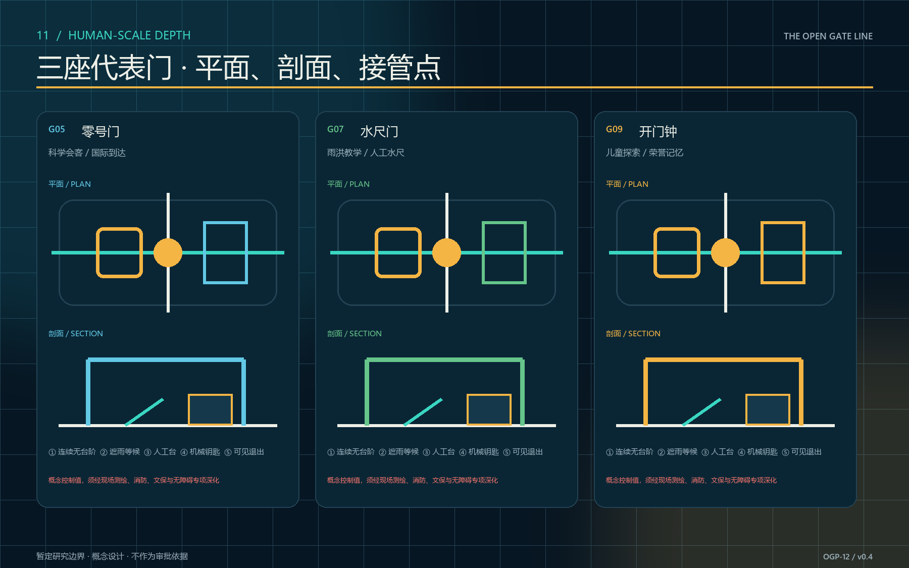
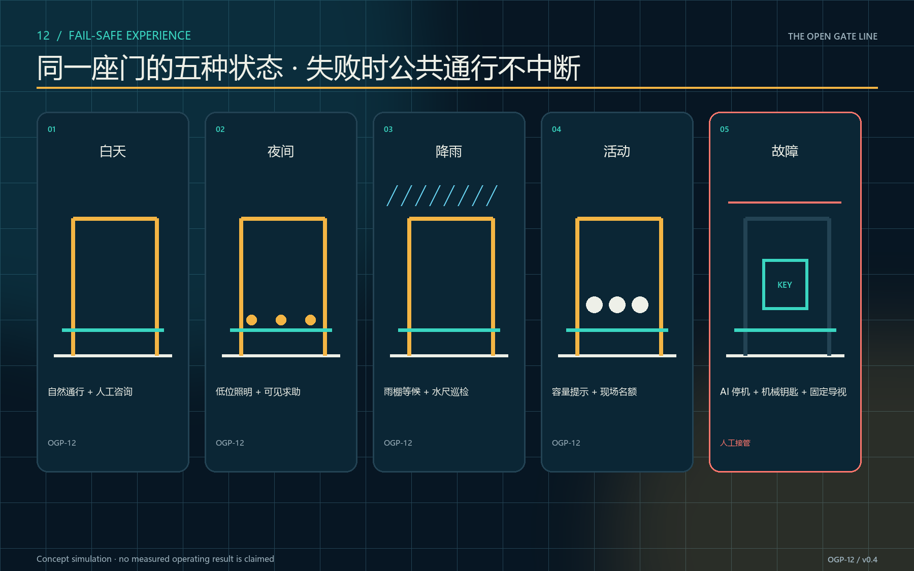
04 / Delivery
先建公共底座，再决定是否扩线
二元启动门槛未通过就不开工，三个原型 KPI 未通过就不扩展，年度审计未通过就迁移或退出。成本只用 L/M/H 相对等级，不虚构工程造价。
9实施项目包
5区域协同路径
4年度固定事件
7.33%概念公共空间率
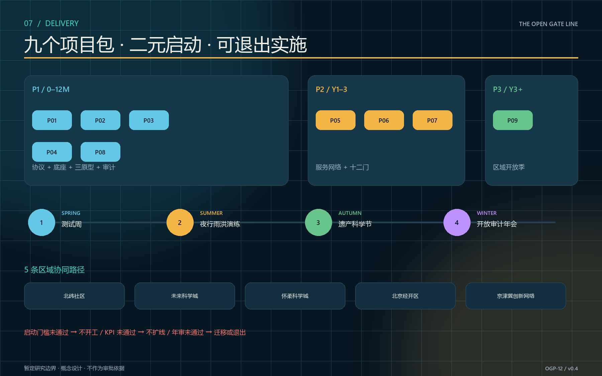
05 / Evidence
提案、数据、脚本、图件同一条证据链
两项审计都不调用 AI：协议审计核对十二门的治理覆盖，空间裁决审计核对三方案、五道硬门、首百日工作包与零现场结果。真实运营指标在获批试点前保持未知。
Loading deterministic audit…
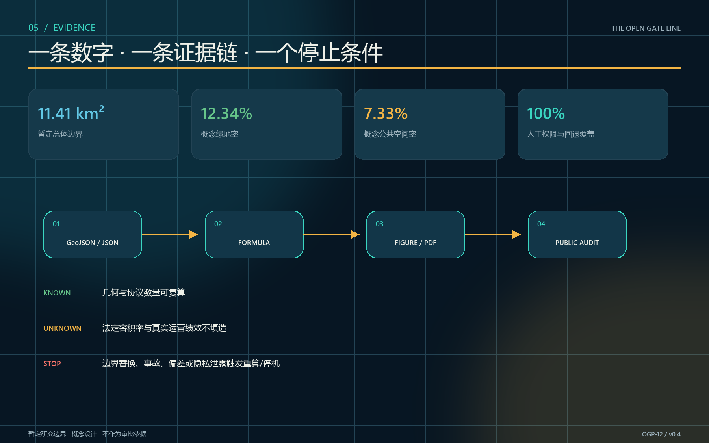